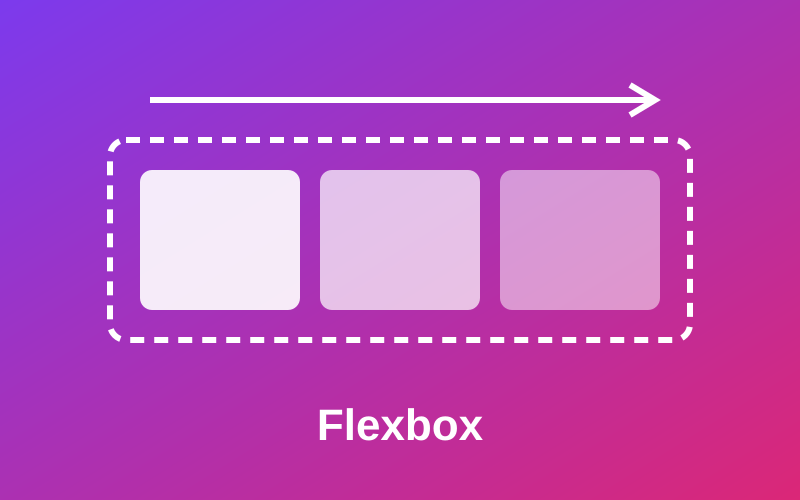
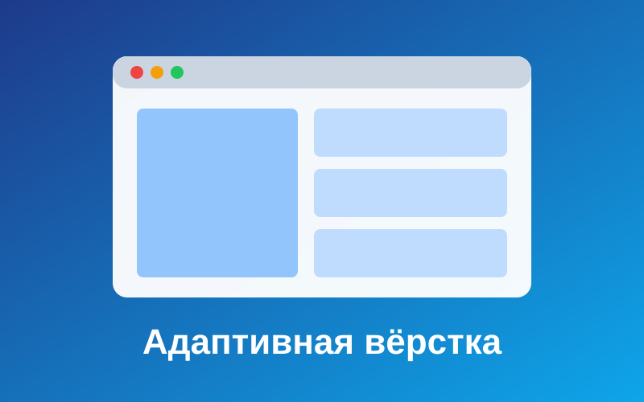
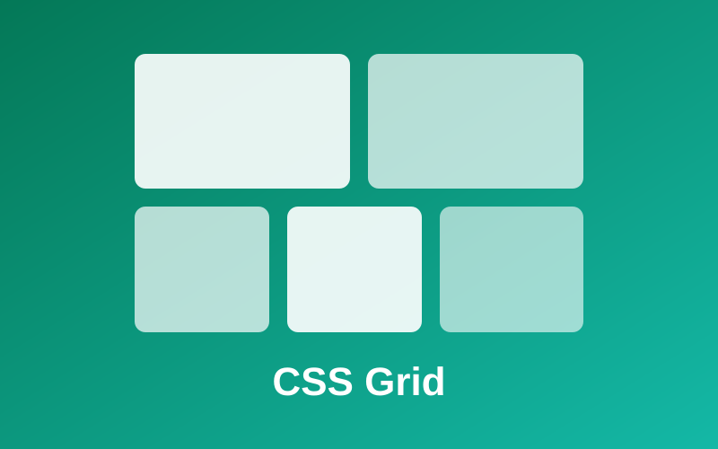

Flexbox за 5 минут
Flexbox раскладывает элементы вдоль одной оси. Свойства justify-content и align-items отвечают за выравнивание, а flex-wrap позволяет переносить блоки на новую строку.
Учебный проект по курсу «Frontend Development». Здесь собраны основные приёмы адаптивной вёрстки: медиазапросы, Flexbox, Grid, бургер-меню без JavaScript и резиновое встраивание видео.
Читать статьи

Flexbox раскладывает элементы вдоль одной оси. Свойства justify-content и align-items отвечают за выравнивание, а flex-wrap позволяет переносить блоки на новую строку.

Grid управляет строками и столбцами одновременно. Запись repeat(auto-fit, minmax(…)) позволяет сетке самой решать, сколько колонок поместится на экране.
Медиазапрос @media применяет стили только при выполнении условия, например при ширине экрана до 768px. Так один HTML-документ выглядит по-разному на телефоне и ноутбуке.
Учебный проект выполнен в рамках практического задания 3-4. Исходный код открыт на GitHub.